|
 |
| КЕВЗАРА® (KEVZARA) sarilumab раствор для п/к введения | |||||||||||||||||||||||||||||||||||||||||||||||||||||||||||
|
Клинико-фармакологическая группа: Специфический иммунодепрессивный препарат. Антагонист рецепторов интерлейкина-6 Номер и дата регистрации: ЛП-005185 от 19.11.18 Код ATX: L04AC14 |
Владелец регистрационного удостоверения: зарегистрировано Представительство: | ||||||||||||||||||||||||||||||||||||||||||||||||||||||||||
Форма выпуска, состав и упаковка Раствор для подкожного введения прозрачный или опалесцирующий, бесцветный или коричневато-желтого цвета.
Вспомогательные вещества: L-гистидин и L-гистидина гидрохлорида моногидрат (в пересчете на L-гистидин) - 3.71 мг, L-аргинина гидрохлорид (в пересчете на L-аргинин) - 8.94 мг, сахароза - 57 мг, полисорбат 20 - 2.28 мг, вода д/и - до 1.14 мл. 1.14 мл - шприцы одноразовые из прозрачного стекла (тип I) с несъемной иглой (2) - пачки картонные× с заклеенными клапанами. Раствор для подкожного введения прозрачный или опалесцирующий, бесцветный или коричневато-желтого цвета.
Вспомогательные вещества: L-гистидин и L-гистидина гидрохлорида моногидрат (в пересчете на L-гистидин) - 3.71 мг, L-аргинина гидрохлорид (в пересчете на L-аргинин) - 8.94 мг, сахароза - 57 мг, полисорбат 20 - 2.28 мг, вода д/и - до 1.14 мл. 1.14 мл - шприцы одноразовые из прозрачного стекла (тип I) с несъемной иглой (2) - пачки картонные× с заклеенными клапанами. × На каждую пачку картонную нанесен антиконтрафактный стикер. | |||||||||||||||||||||||||||||||||||||||||||||||||||||||||||
Описание препарата основано на официально утвержденной инструкции по применению и утверждено компанией-производителем для издания 2020 г. | |||||||||||||||||||||||||||||||||||||||||||||||||||||||||||
Фармакологическое действие |
Фармакокинетика |
Показания |
Режим дозирования |
Побочное действие |
Противопоказания |
Беременность и лактация |
Особые указания |
Передозировка |
Лекарственное взаимодействие |
Условия хранения и сроки годности |
Условия реализации
Фармакологическое действие
Механизм действия Сарилумаб - человеческое моноклональное антитело (подтип IgG1) к рецептору интерлейкина-6 (ИЛ-6). Сарилумаб специфически связывается как с растворимыми, так и с мембранными рецепторами ИЛ-6 (IL-6Rα) и подавляет ИЛ-6-опосредованную передачу сигнала с вовлечением убиквитарного сигнального белка гликопротеина 130 (gp130) и STAT-3 белков (трансдукторы сигналов и активаторы транскрипции-3). В функциональных исследованиях на человеческих клетках было показано, что сарилумаб способен блокировать сигнальный путь ИЛ-6, измеряемый по степени подавления STAT-3 белков, только в присутствии ИЛ-6. ИЛ-6 - плейотропный цитокин, который стимулирует различные клеточные ответы, такие как пролиферация, дифференцировка, выживаемость и апоптоз клеток; активирует высвобождение белков острой фазы воспаления в гепатоцитах, включая C-реактивный белок (СРВ) и сывороточный амилоид А. Повышенный уровень ИЛ-6, выявляемый в синовиальной жидкости у пациентов с ревматоидным артритом, играет важную роль как в развитии патологического воспаления, так и в развитии деструкции суставов, которые являются отличительными признаками ревматоидного артрита. ИЛ-6 участвует в различных физиологических процессах, таких как миграция и активация Т- и В-лимфоцитов, моноцитов и остеокластов, приводя к развитию системного воспаления, воспаления синовиальной оболочки суставов и развитию костных эрозий у пациентов с ревматоидным артритом. Действие сарилумаба приводит к уменьшению воспаления и сопровождается изменениями лабораторных показателей, такими как снижение абсолютного числа нейтрофилов (АЧН) и повышение концентрации липидов. Фармакодинамические эффекты После п/к введения сарилумаба в разовых дозах 150 мг и 200 мг у пациентов с ревматоидным артритом наблюдалось быстрое снижение уровня СРБ. Уровень СРБ снижался до нормальных значений уже через 4 дня после начала лечения. У пациентов с ревматоидным артритом после введения разовой дозы сарилумаба АЧН снижалось до минимального значения в течение 3-4 дней, а затем восстанавливалось до исходного уровня. Лечение сарилумабом приводило к снижению уровня фибриногена и сывороточного амилоида А, а также к повышению уровней гемоглобина и альбумина сыворотки крови. Клиническая эффективность и безопасность Эффективность и безопасность препарата Кевзара® были оценены в трех рандомизированных двойных слепых контролируемых многоцентровых исследованиях. Плацебо-контролируемые исследования В исследовании MOBILITY принимали участие 1197 пациентов с ревматоидным артритом с недостаточным клиническим ответом на терапию метотрексатом. Пациенты получали препарат Кевзара® в дозах 200 мг, 150 мг или плацебо каждые 2 недели одновременно с метотрексатом. В исследовании TARGET принимали участие 546 пациентов с ревматоидным артритом с недостаточным клиническим ответом на терапию одним или несколькими антагонистами ФНОα или в случае их непереносимости. Пациенты получали препарат Кевзара® в дозах 200 мг или 150 мг или плацебо в сочетании с традиционными болезнь-модифицирующими антиревматическими препаратами [тБМАРП] каждые 2 недели. Клинический ответ На 24-й неделе терапии в обоих исследованиях у пациентов, получавших препарат Кевзара® в дозе 200 мг или 150 мг в сочетании с тБМАРП 1 раз каждые 2 недели частота ответа ACR20, ACR50 и ACR70 была выше, чем у пациентов, получавших плацебо. В открытой продленной фазе исследования эти результаты сохранялись в течение 3 лет терапии. В исследовании MOBILITY к 52-й неделе большая часть пациентов, получавших препарат Кевзара® в дозе 200 мг или 150 мг 1 раз каждые 2 недели в сочетании с метотрексатом, достигла ремиссии, определяемой по DAS28-CPB < 2.6 (Индексу активности болезни по 28 суставам - C-реактивный белок), по сравнению с группой пациентов, получавших плацебо в сочетании с метотрексатом. В исследованиях MOBILITY и TARGET в группе активного лечения более высокая частота ответа по критериям ACR20 по сравнению с группой плацебо наблюдалась уже через 2 недели; результаты сохранялись на протяжении всего исследования. Результаты исследования MOBILITY через 52 недели терапии были сходны с результатами исследования TARGET через 24 недели. Рентгенологический ответ В исследовании MOBILITY эффективность обеих доз препарата Кевзара® в сочетании с метотрексатом превосходила эффективность комбинации плацебо и метотрексата в отношении структурных повреждений суставов, оцениваемых по изменению модифицированного счета Шарпа/ван дер Хейде по сравнению с исходным уровнем через 24 и через 52 недели. Через 52 недели терапии препаратом Кевзара® в дозе 200 мг и в дозе 150 мг в сочетании с метотрексатом было отмечено уменьшение прогрессирования структурных повреждений на 91% и 68% соответственно, по сравнению с комбинацией плацебо и метотрексата. Изменения функционального статуса В исследованиях MOBILITY и TARGET к 16-й и 12-й неделе неделе терапии соответственно было продемонстрировано более выраженное улучшение функционального статуса по HAQ-DI в группах препарата Кевзара® по сравнению с плацебо, которое сохранялось до 52 недели в исследовании MOBILITY. Исследование с использованием активного препарата в качестве контроля Исследование MONARCH - 24-недельное рандомизированное двойное слепое, двойное маскированное исследование, в котором сравнивали монотерапию препаратом Кевзара® в дозе 200 мг с монотерапией адалимумабом в дозе 40 мг. Препарат Кевзара® в дозе 200 мг превосходил адалимумаб в дозе 40 мг в отношении снижения активности заболевания и улучшения функционального статуса. Фармакокинетика
Фармакокинетика сарилумаба исследовалась у 2186 пациентов с ревматоидным артритом, из которых 751 пациент получал препарат Кевзара® в дозе 150 мг и 891 пациент - в дозе 200 мг п/к 1 раз каждые 2 недели в течение до 52 недель. Медиана максимальной концентрации достигалась через 2-4 дня после введения препарата. Всасывание В равновесном состоянии концентрация сарилумаба в интервалах между введениями, которая измерялась с помощью AUC, увеличивалась в 2 раза при повышении дозы со 150 мг до 200 мг при введении 1 раз каждые 2 недели. Равновесное состояние достигалось через 12-16 недель с 2-3-кратным накоплением по сравнению с концентрацией после введения разовой дозы. При введении в дозе дозы 150 мг 1 раз каждые 2 недели расчетные средние значения (±стандартное отклонение) в равновесном состоянии AUC, Cmin и Сmax сарилумаба составили 210±115 мг×сут/л, 6.95±7.6 мг/л и 20.4±8.27 мг/л соответственно. При введении в дозе 200 мг 1 раз каждые 2 недели расчетные средние значения (±стандартное отклонение) в равновесном состоянии AUC, Cmin и Сmax сарилумаба составили 396±194 мг×сут/л, 16.7±13.5 мг/л и 35.4±13.9 мг/л соответственно. Распределение У пациентов с ревматоидным артритом кажущийся Vd в равновесном состоянии составил 8.3 л. У пациентов с ревматоидным артритом наблюдалась более чем дозозависимое увеличение фармакокинетической экспозиции. В равновесном состоянии концентрация в перерывах между введениями препарата измерялась AUC, которая увеличивалась примерно в 2 раза с повышением дозы в 1.33 раза от 150 до 200 мг при введении препарата 1 раз каждые 2 недели. Метаболизм Метаболизм сарилумаба не изучен. Предполагается, что сарилумаб, как и другие моноклональные антитела, распадается на небольшие пептиды и аминокислоты через катаболизм таким же образом, как и эндогенный иммуноглобулин (IgG). Симвастатин является субстратом изофермента CYP3A4 и транспортного белка ОАТР1В1. У 17 пациентов с ревматоидным артритом через неделю после разового п/к введения сарилумаба в дозе 200 мг экспозиция симвастатина и симвастатиновой кислоты уменьшилась на 45% и 36 соответственно. Выведение Выведение сарилумаба происходит одновременно двумя путями: линейным и нелинейным. При высоких концентрациях выведение осуществляется преимущественно посредством линейного ненасыщаемого протеолитического пути, в то время как при более низких концентрациях преобладает нелинейное, насыщаемое, опосредованное мишенями, выведение. Эти параллельные пути определяют начальный Т1/2 от 8 до 10 дней и терминальный Т1/2, зависящий от концентрации, от 2 до 4 дней. После достижения равновесного состояния при введении последней дозы сарилумаба 150 мг и 200 мг медиана времени до неопределяемых концентраций, составляет 30 и 49 дней соответственно. Моноклональные антитела не выводятся почками и печенью. Фармакокинетика у особых групп пациентов Популяционный анализ фармакокинетики у взрослых пациентов с ревматоидным артритом (возраст от 18 до 88 лет; 14% пациентов в возрасте старше 65 лет) показал, что возраст, пол и этническая принадлежность не оказывают значимого влияния на фармакокинетику сарилумаба. У пациентов с массой тела более 100 кг применение сарилумаба в обеих дозах (150 мг и 200 мг) продемонстрировало эффективность; однако пациенты с массой тела более 100 кг получили большую терапевтическую пользу при применении дозы 200 мг. Каких-либо официальных исследований влияния почечной недостаточности на фармакокинетику сарилумаба не проводилось. Почечная недостаточность легкой и средней степени тяжести не влияет на фармакокинетику сарилумаба. Пациентам с почечной недостаточностью легкой и средней степени тяжести коррекция дозы не требуется. Применение сарилумаба у пациентов с почечной недостаточностью тяжелой степени не изучалось. Каких-либо официальных исследований влияния печеночной недостаточности на фармакокинетику сарилумаба не проводилось. Показания
Препарат Кевзара® можно применять в качестве монотерапии при непереносимости метотрексата или при нецелесообразности терапии метотрексатом. Режим дозирования
Лечение препаратом Кевзара® должно назначаться и проводиться под контролем специалистов, имеющих опыт диагностики и лечения ревматоидного артрита. Рекомендуемая доза препарата Кевзара® составляет 200 мг 1 раз каждые 2 недели. При развитии нейтропении, тромбоцитопении, повышении активности печеночных ферментов рекомендуется уменьшить дозу с 200 мг 1 раз каждые 2 недели до 150 мг 1 раз каждые 2 недели. Коррекция дозы При развитии серьезных инфекций следует прекратить лечение препаратом Кевзара® до установления контроля над инфекционным процессом. Не рекомендуется начинать лечение препаратом Кевзара® у пациентов со снижением абсолютного числа нейтрофилов (АЧН) менее чем 2×109/л. Не рекомендуется начинать лечение препаратом Кевзара® у пациентов со снижением количества тромбоцитов ниже 150×103/мкл. Рекомендации по коррекции дозы при развитии нейтропении, тромбоцитопении или при повышении активности печеночных ферментов приведены ниже в таблицах. Таблица 1. Низкое значение АЧН
Таблица 2. Снижение количества тромбоцитов
Таблица 3. Повышение активности печеночных ферментов
* Верхняя граница нормы. Пропуск дозы Если введение препарата Кевзара® пропущено, и с момента пропуска введения препарата прошло 3 дня или менее, то следующую дозу необходимо ввести как можно скорее. Следующую очередную дозу вводят в обычное запланированное время. Если с момента пропуска введения препарата прошло 4 дня или более, то следующую дозу вводят в следующее обычное запланированное время. При этом дозу нельзя удваивать. Особые группы пациентов У пациентов с почечной недостаточностью легкой и средней степени тяжести коррекции дозы препарата не требуется. Применение препарата Кевзара® у пациентов с почечной недостаточностью тяжелой степени не изучалось. Безопасность и эффективность препарата Кевзара® не изучались у пациентов с нарушениями функции печени, включая пациентов с положительными результатами серологических исследований на вирус гепатита В (HBV) или вирус гепатита С (HCV). У пациентов в возрасте старше 65 лет коррекции дозы не требуется. Не следует применять препарат Кевзара® у детей и подростков в возрасте до 18 лет (безопасность и эффективность препарата при ревматоидном артрите не установлены). Способ применения Препарат Кевзара® вводят п/к. Все содержимое (1.14 мл) предварительно заполненного шприца/предварительно заполненной шприц-ручки следует вводить п/к. Места инъекций (область живота, наружная поверхность бедра, наружная поверхность плеча) следует чередовать при каждой инъекции. Не следует вводить препарат в болезненную и поврежденную кожу, в места с кровоподтеками и рубцами. Пациент может самостоятельно выполнять п/к инъекцию препарата Кевзара®, также инъекцию может выполнять лицо, осуществляющее уход за пациентом. Пациент или лицо, осуществляющее уход за пациентом, до начала применения препарата Кевзара® должны быть обучены подготовке и введению препарата. Инструкция по использованию предварительно заполненных одноразовых шприц-ручек На рисунке показаны части предварительно заполненной шприц-ручки, содержащей препарат Кевзара®. 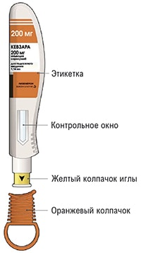 Устройство представляет собой предварительно заполненную шприц-ручку (в инструкции называемую "шприц-ручка"), содержащую препарат Кевзара® в разовых дозах 150 мг и 200 мг. Препарат вводят п/к 1 раз каждые 2 недели. Перед первой инъекцией следует попросить лечащего врача показать, как правильно использовать шприц-ручку. Что следует делать:
Что не следует делать: × не используйте шприц-ручку, если она повреждена, ее колпачок потерян или не прикреплен; × не снимайте колпачок до тех пор, пока Вы не готовы сделать инъекцию; × не нажимайте на желтый колпачок иглы и не прикасайтесь к нему пальцами; × не пытайтесь надеть колпачок обратно на шприц-ручку; × не используйте шприц-ручку повторно; × не замораживайте и не нагревайте шприц-ручку; × не храните шприц-ручку при температуре выше 25°С после того, как извлекли ее из холодильника; × не подвергайте шприц-ручку воздействию прямых солнечных лучей; × не делайте инъекцию через одежду. Если у Вас имеются любые дополнительные вопросы, обратитесь к лечащему врачу или позвоните по номеру телефона компании, указанному в инструкции. Шаг А. Подготовьтесь к инъекции. 1. На чистой ровной рабочей поверхности разложите все, что Вам понадобится.
2. Посмотрите на этикетку.
Не используйте шприц-ручку после этой даты. 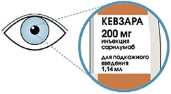 3. Посмотрите на контрольное окно.
× не вводите препарат, если жидкость мутная, другого цвета или содержит включения; × не используйте шприц-ручку, если контрольное окно равномерно желтого цвета. 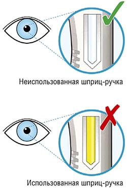 4. Положите шприц-ручку на ровную поверхность и оставьте ее не менее чем на 60 мин для того, чтобы она нагрелась до комнатной температуры (<25°С).
× не используйте шприц-ручку, если она находилась вне холодильника более 14 дней; × не нагревайте шприц-ручку; дайте ей нагреться самостоятельно; × шприц-ручка не должна подвергаться воздействию прямых солнечных лучей. 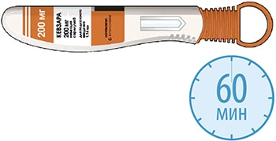 5. Выберите место инъекции.
× не вводите препарат в места с чувствительной, поврежденной кожей или в места с синяками или шрамами. 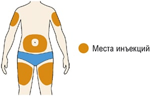 6. Подготовьте место инъекции.
× до введения препарата больше не прикасайтесь к месту инъекции. Шаг Б. Выполните инъекцию (выполняйте Шаг Б только после завершения Шага А "Подготовьтесь к инъекции"). 1. Поверните или потяните оранжевый колпачок. × не снимайте колпачок с иглы до тех пор, пока не будете готовы выполнить инъекцию; × не нажимайте на желтый колпачок иглы и не дотрагивайтесь до него пальцами; × не надевайте оранжевый колпачок обратно. 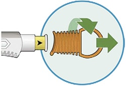 2. Прижмите желтый колпачок иглы вертикально к коже примерно под углом 90°.
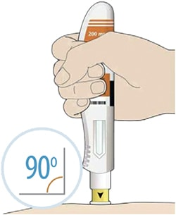 3. Нажмите на кожу шприц-ручкой и удерживайте ее.
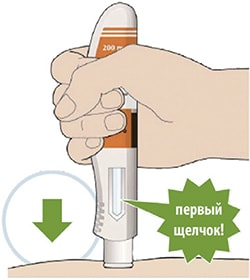 4. Продолжайте удерживать шприц-ручку, плотно прижав ее к коже.
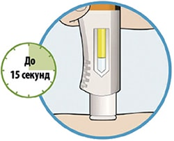 5. Вы услышите второй щелчок. Прежде чем удалить шприц-ручку, проверьте, стало ли контрольное окно полностью желтым.
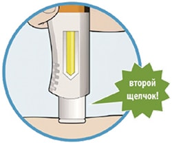 6. Уберите шприц-ручку от кожи.
× не растирайте кожу после инъекции. 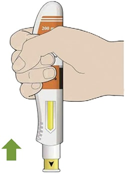 7. Положите использованную шприц-ручку и колпачок в контейнер, резистентный к проколам, сразу же после инъекции.
× не надевайте колпачок обратно; × не выбрасывайте использованную шприц-ручку вместе с бытовыми отходами; × не применяйте использованный контейнер, резистентный к проколам, для других целей; × не выбрасывайте использованный контейнер, резистентный к проколам, вместе с бытовыми отходами, за исключением случаев, когда это разрешается местными правилами. Спросите лечащего врача, как выбрасывать (утилизировать) этот контейнер. 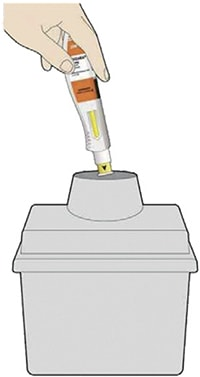 Инструкция по использованию предварительно заполненных одноразовых шприцев На рисунке показаны части предварительно заполненного шприца, содержащего препарат Кевзара®. 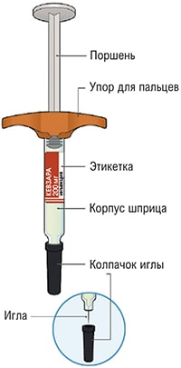 Устройство представляет собой предварительно заполненный шприц (в инструкции называемый "шприц"), содержащий препарат Кевзара® в разовых дозах 150 мг и 200 мг. Препарат вводят п/к 1 раз каждые 2 недели. Перед первой инъекцией следует попросить лечащего врача показать, как правильно использовать шприц. Что следует делать
Что не следует делать × не используйте шприц, если он поврежден, или если колпачок иглы отсутствует или не прикреплен; × не снимайте колпачок с иглы до тех пор, пока Вы не готовы сделать инъекцию; × не прикасайтесь к игле; × не пытайтесь надеть колпачок обратно на шприц; × не используйте шприц повторно; × не замораживайте и не нагревайте шприц; × не храните шприц при температуре выше 25°С после того, как извлекли его из холодильника; × не подвергайте шприц воздействию прямых солнечных лучей; × не делайте инъекцию через одежду. Если у Вас имеются любые дополнительные вопросы, обратитесь к лечащему врачу или позвоните по номеру телефона компании, указанному в инструкции. Шаг А. Подготовьтесь к инъекции. 1. На чистой ровной рабочей поверхности разложите все, что Вам понадобится.
2. Посмотрите на этикетку.
× не используйте предварительно заполненный шприц после этой даты. 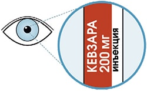 3. Посмотрите на лекарственный препарат.
× не вводите препарат, если жидкость мутная, другого цвета или содержит включения. 4. Положите шприц на ровную поверхность и оставьте его не менее чем на 30 мин для того, чтобы он нагрелся до комнатной температуры (<25°С).
× не используйте шприц, если он находился вне холодильника более 14 дней; × не нагревайте шприц; дайте ему нагреться самостоятельно; × шприц не должен подвергаться воздействию прямых солнечных лучей. 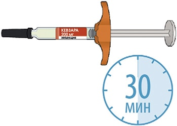 5. Выберите место инъекции.
× не вводите препарат в места с чувствительной, поврежденной кожей или в места с синяками или шрамами. 6. Подготовьте место инъекции.
× до введения препарата больше не прикасайтесь к месту инъекции. Шаг Б. Выполните инъекцию (выполняйте Шаг Б только после завершения Шага А "Подготовьтесь к инъекции"). 1. Снимите колпачок с иглы.
× не касайтесь поршня руками; × не пытайтесь удалить пузырьки воздуха из шприца; × не снимайте колпачок с иглы до тех пор, пока не будете готовы выполнить инъекцию; × не надевайте колпачок обратно на иглу. 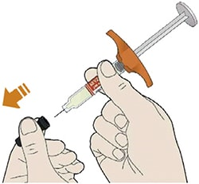 2. Зажмите кожу.
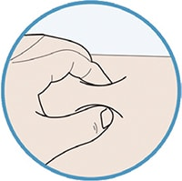 3. Введите иглу в кожную складку под углом 45°. 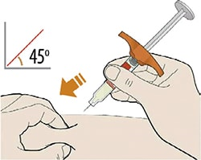 4. Надавите на поршень.
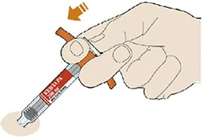 5. Перед тем как извлечь иглу убедитесь, что шприц пустой.
× не растирайте кожу после инъекции. 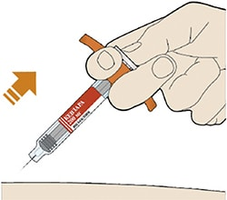 6. Положите использованный шприц и колпачок в контейнер, резистентный к проколам, сразу же после инъекции.
× не надевайте колпачок обратно на иглу; × не выбрасывайте использованный шприц вместе с бытовыми отходами; × не применяйте использованный контейнер, резистентный к проколам, для других целей; × не выбрасывайте использованный контейнер, резистентный к проколам, вместе с бытовыми отходами, за исключением случаев, когда это разрешается местными правилами. Спросите лечащего врача, как выбрасывать (утилизировать) этот контейнер. 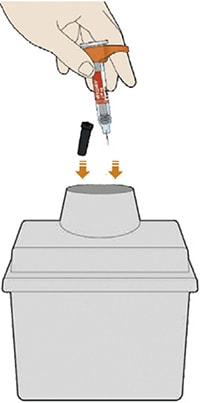 Подготовка и обращение с препаратом Препараты для парентерального введения должны осматриваться визуально перед введением на предмет наличия видимых частиц и изменения цвета. Если раствор мутный, другого цвета или содержит видимые частицы, его не следует использовать. После извлечения предварительно заполненной шприц-ручки или предварительно заполненного шприца из холодильника до введения препарата Кевзара® их следует оставить на некоторое время для нагревания до комнатной температуры (<25°С). После извлечения из холодильника препарат Кевзара® следует использовать в течение 14 дней, препарат нельзя хранить при температуре выше 25°С. Предварительно заполненные шприц-ручки или предварительно заполненные шприцы следует хранить в оригинальной упаковке для защиты от прямых солнечных лучей. Любое количество неиспользованного препарата или отходы после его использования должны быть утилизированы в соответствии с местными нормативными требованиями. Побочное действие
Наиболее частыми нежелательными реакциями, которые наблюдались в клинических исследованиях, были нейтропения, повышение активности АЛТ, эритема в месте инъекции, инфекции верхних отделов дыхательных путей, инфекции мочевыводящих путей. Наиболее частыми серьезными нежелательными реакциями были инфекции. Безопасность препарата Кевзара® в сочетании с БМАРП оценивалась на основании данных 7 клинических исследований, 2 из которых были плацебо-контролируемыми, с включением 2887 пациентов (выборка для оценки долгосрочной безопасности). Из них 2170 пациентов получали препарат Кевзара® не менее 24 недель, 1546 пациентов - не менее 48 недель, 1020 пациентов - не менее 96 недель и 624 пациента - не менее 144 недель. Частота нежелательных реакций, перечисленных ниже, определялась следующим образом: очень часто (≥1/10); часто (от ≥1/100 до <1/10); нечасто (от ≥1/1000 до <1/100); редко (от ≥1/10 000 до <1/1000); очень редко (<1/10 000). В пределах каждой частотной группы нежелательные реакции представлены в порядке уменьшения серьезности. Инфекционные и паразитарные заболевания: часто - инфекции верхних отделов дыхательных путей, инфекции мочевыводящих путей, назофарингит, герпес ротовой полости. Со стороны системы кроветворения: очень часто - нейтропения; часто - тромбоцитопения. Со стороны печени и желчевыводящих путей: повышение активности печеночных трансаминаз. Со стороны обмена веществ: часто - гипертриглицеридемия, гиперхолестеринемия. Местные реакции: часто - эритема и зуд в месте введения препарата. Описание отдельных нежелательных реакций Инфекции В популяции пациентов, участвующих в плацебо-контролируемых исследованиях, распространенность инфекций составила 84.5, 81.0 и 75.1 случаев на 100 пациенто-лет для комбинаций препарата Кевзара® в дозе 200 мг и БМАРП, препарата Кевзара® в дозе 150 мг и БМАРП и плацебо и БМАРП соответственно. Наиболее частыми инфекциями (от 5% до 7% пациентов) были инфекции верхних отделов дыхательных путей, инфекции мочевыводящих путей и назофарингит. Частота серьезных инфекций составила 4.3, 3.0 и 3.1 случаев на 100 пациенто-лет для комбинаций препарата Кевзара® в дозе 200 мг и БМАРП, Кевзара® в дозе 150 мг и БМАРП и плацебо и БМАРП соответственно. При оценке долгосрочной безопасности в популяции пациентов, получавших препарат Кевзара® в сочетании с БМАРП, частота инфекций и серьезных инфекций составила 57.3 и 3.4 случаев на 100 пациенто-лет соответственно. Наиболее частыми серьезными инфекциями были пневмонии и целлюлит (воспаление подкожной жировой клетчатки). Были зарегистрированы случаи оппортунистических инфекций. Общая частота инфекций и серьезных инфекций в популяции пациентов, получавших препарат Кевзара® в виде монотерапии, была сопоставима с частотой в популяции пациентов, получавших терапию препаратом Кевзара® в сочетании с БМАРП. Перфорация ЖКТ В популяции пациентов, участвующих в плацебо-контролируемых исследованиях, у одного пациента, получавшего препарат Кевзара®, развилась перфорация ЖКТ (0.11 случая на 100 пациенто-лет). При оценке долгосрочной безопасности в популяции пациентов, получавших препарат Кевзара® в сочетании с БМАРП, частота перфораций ЖКТ составила 0.14 случая на 100 пациенто-лет. Сообщения о перфорации ЖКТ в основном регистрировали как осложнения дивертикулита, включая перфорацию нижних отделов ЖКТ и абсцесс. Большинство пациентов с развившейся перфорацией ЖКТ получали сопутствующую терапию НПВП, ГКС или метотрексатом. Неизвестно, как дополнительно влияют эти препараты на развитие перфорации ЖКТ при одновременном применении с препаратом Кевзара®. В популяции пациентов, получавших препарат Кевзара® в монотерапии, о перфорациях ЖКТ не сообщалось. Реакции гиперчувствительности В популяции пациентов, участвующих в плацебо-контролируемых исследованиях, доля пациентов, которые прекратили лечение из-за реакций гиперчувствительности, была выше среди пациентов, получавших препарат Кевзара® (0.9% - в группе пациентов, получавших препарат в дозе 200 мг, 0.5% - в группе пациентов, получавших препарат в дозе 150 мг), чем в группе плацебо (0.2 %). При оценке долгосрочной безопасности частота отмены препарата Кевзара® из-за реакций гиперчувствительности в популяции пациентов, получавших препарат Кевзара® в сочетании с БМАРП, и в популяции пациентов, получавших препарат Кевзара® в виде монотерапии, была сопоставима с частотой в популяции пациентов из плацебо-контролируемых исследований. В плацебо-контролируемых исследованиях серьезные нежелательные реакции гиперчувствительности развились у 0.2% пациентов, которые получали препарат Кевзара® в дозе 200 мг каждые 2 недели в сочетании с БМАРП, и ни одного случая не было отмечено в группе пациентов, получавших препарат Кевзара® в дозе 150 мг каждые 2 недели в сочетании с БМАРП. Реакции в месте введения препарата В популяции пациентов, участвующих в плацебо-контролируемых исследованиях, реакции в месте введения препарата были зарегистрированы у 9.5%, 8% и 1.4% пациентов, получавших препарат Кевзара® в дозах 200 мг, 150 мг и плацебо соответственно. У большинства пациентов реакции в месте введения (включая эритему и зуд) были легкой степени тяжести. В связи с реакциями в месте введения препарат Кевзара® был преждевременно отменен у двух пациентов (0.2%). Отклонения лабораторных показателей Для того чтобы обеспечить прямое сравнение частоты отклонений лабораторных показателей между группами плацебо и активного лечения, были использованы данные, полученные за период 0-12 недель, поскольку они были получены до того, как пациентов можно было перевести с плацебо на препарат Кевзара®. Количество нейтрофилов. Снижение количества нейтрофилов <1×109/л отмечалось у 6.4% и 3.6% пациентов в группах, принимавших препарат Кевзара® в дозе 200 мг в сочетании с БМАРП и препарат Кевзара® в дозе 150 мг в сочетании с БМАРП соответственно; в группе плацебо в сочетании с БМАРП данная нежелательная реакция не наблюдалась. Снижение количества нейтрофилов <0.5×109/л отмечалось у 0.8% и 0.6% пациентов в группах, принимавших препарат Кевзара® в дозе 200 мг в сочетании с БМАРП и препарат Кевзара® в дозе 150 мг в сочетании с БМАРП соответственно. У пациентов со снижением АЧН изменение схемы лечения, например, прерывание терапии препаратом Кевзара® или снижение дозы, приводило к увеличению или нормализации АЧН. Снижение АЧН не сопровождалось более высокой частотой развития инфекций, включая серьезные инфекции. При оценке долгосрочной безопасности в популяции пациентов, получавших препарат Кевзара® в сочетании с БМАРП, и в популяции пациентов, получавших монотерапию препаратом Кевзара®, наблюдения относительно число нейтрофилов были сопоставимы с наблюдениями, полученными для популяции пациентов из плацебо-контролируемых исследований. Количество тромбоцитов. Снижение количества тромбоцитов <100×103/мкл наблюдалось у 1.2% и у 0.6% пациентов в группах, принимавших препарат Кевзара® в дозе 200 мг в сочетании с БМАРП и препарат Кевзара® в дозе 150 мг в сочетании с БМАРП соответственно; в группе пациентов, получавших плацебо в сочетании с БМАРП, данная нежелательная реакция не наблюдалась. При оценке долгосрочной безопасности в популяции пациентов, получавших препарат Кевзара® в сочетании с БМАРП, и в популяции пациентов, получавших монотерапию препаратом Кевзара®, наблюдения относительно количества тромбоцитов были сопоставимы с наблюдениями, полученными для популяции пациентов из плацебо-контролируемых исследований. Кровотечений, связанных со снижением количества тромбоцитов, зарегистрировано не было. Ферменты печени. Изменения показателей печеночных ферментов представлены в таблице 4. У пациентов с повышением активности печеночных трансаминаз изменение схемы лечения, т.е. прерывание терапии препаратом Кевзара® или снижение дозы, приводило к снижению или нормализации активности печеночных трансаминаз. Эти изменения не сопровождались ни клинически значимым повышением концентрации прямого билирубина, ни клиническими проявлениями гепатита или печеночной недостаточности. Таблица 4. Частота повышения активности печеночных трансаминаз в контролируемых клинических исследованиях
Липиды. В популяции пациентов, участвующих в плацебо-контролируемых исследованиях, параметры липидного профиля (ЛПНП, ЛПВП и триглицериды) впервые оценивались через 4 недели после начала лечения комбинацией препарата Кевзара® и БМАРП. На 4-й неделе терапии среднее значение ЛПНП увеличилось на 14 мг/дл, среднее значение триглицеридов - на 23 мг/дл, среднее значение ЛПВП - на 3 мг/дл. После 4-й недели терапии дополнительного повышения этих показателей не наблюдалось. Значимых различий между дозами отмечено не было. При оценке долгосрочной безопасности в популяции пациентов, получавших препарат Кевзара® в сочетании БМАРП, и в популяции пациентов, получавших препарат Кевзара® в монотерапии, данные показателей липидного профиля были сопоставимы с наблюдениями, полученными для популяции пациентов из плацебо-контролируемых исследований. Иммуногенность Как и все белковые лекарственные препараты, препарат Кевзара® обладает потенциалом иммуногенности. В популяции пациентов, участвовавших в плацебо-контролируемых исследованиях, у 4%, 5.6% и 2% пациентов, получавших препарат Кевзара® в дозе 200 мг в сочетании с БМАРП, препарат Кевзара® в дозе 150 мг в сочетании с БМАРП и комбинацию плацебо и БМАРП соответственно, выявлена положительная реакция на антитела к сарилумабу. Положительная реакция на нейтрализующие антитела обнаружена у 1%, 1.6% и 0.2% пациентов, получавших препарат Кевзара® в дозах 200 мг, 150 мг и плацебо соответственно. Данные в популяции пациентов, получавших препарат Кевзара® в монотерапии, были сопоставимы с результатами популяции пациентов, получавших препарат Кевзара® в сочетании с БМАРП. Образование антител к сарилумабу может повлиять на его фармакокинетику. Корреляции между образованием антител к сарилумабу и потерей эффективности терапии или развитием нежелательных реакций не наблюдалось. Определение иммунного ответа во многом зависит от чувствительности и специфичности используемых методов, способа и времени забора образцов, сопутствующей терапии и основного заболевания. По этим причинам сравнение частоты выработки антител к сарилумабу с частотой выработки антител к другим препаратам может быть недостоверным. Злокачественные новообразования В популяции пациентов, участвовавших в плацебо-контролируемых исследованиях, частота развития злокачественных новообразований у пациентов, получавших либо препарат Кевзара® в сочетании с БМАРП, либо комбинацию плацебо и БМАРП, была одинаковой (1.0 случай на 100 пациенто-лет). При оценке долгосрочной безопасности в популяции пациентов, получавших препарат Кевзара® в сочетании с БМАРП, и в популяции пациентов, получавших препарат Кевзара® в монотерапии, наблюдения относительно частоты злокачественных новообразований были сопоставимы с наблюдениями, полученными в популяции пациентов из плацебо-контролируемых исследований. Противопоказания
С осторожностью:
Ограничения по применению препарата в зависимости от возраста пациента приведены в разделе "Режим дозирования". Применение при беременности и кормлении грудью
Беременность Данные по применению сарилумаба у беременных женщин ограничены или отсутствуют. Известно, что моноклональные антитела проникают через плацентарный барьер, при этом большее количество антител проникает через плацентарный барьер в III триместре. Исследования на животных не дают прямых или косвенных указаний на негативное влияние сарилумаба с точки зрения репродуктивной токсичности. Препарат Кевзара® не следует применять во время беременности, за исключением тех случаев, когда потенциальная польза применения для матери превышает потенциальный риск для плода. Женщины детородного возраста должны использовать эффективные методы контрацепции во время терапии препаратом Кевзара® и в течение 3 месяцев после ее окончания. Период грудного вскармливания Неизвестно, экскретируется ли сарилумаб с грудным молоком или подвергается системной абсорбции у новорожденного после грудного вскармливания. Информация относительно влияния сарилумаба на ребенка, находящегося на грудном вскармливании, или продукцию грудного молока отсутствует. Поскольку IgG1 в небольших количествах могут экскретироваться с грудным молоком, следует с учетом пользы грудного вскармливания для ребенка и пользы терапии для женщины принять решение либо о прекращении грудного вскармливания, либо об отмене сарилумаба. Фертильность Данные о воздействии сарилумаба на фертильность у людей отсутствуют. Исследования на животных показали отсутствие негативного влияния на фертильность самок и самцов. Особые указания
Серьезные инфекции В период лечения препаратом Кевзара® следует тщательно контролировать пациентов на предмет развития симптомов и признаков инфекций. Поскольку среди пациентов пожилого возраста частота развития инфекций выше, следует с осторожностью проводить лечение данной категории пациентов. Препарат Кевзара® не следует применять у пациентов с активным течением инфекционного заболевания, включая локализованные инфекции. Необходимо оценить соотношение пользы и риска перед началом применения препарата Кевзара® у пациентов:
Следует прервать лечение препаратом Кевзара®, если у пациента отмечается развитие серьезной или оппортунистической инфекции. Пациенту, у которого в период лечения препаратом Кевзара® развилась инфекция, следует незамедлительно провести полное диагностическое обследование, предусмотренное для лиц с ослабленным иммунитетом; затем ему необходимо назначить адекватную антибактериальную терапию с последующим тщательным наблюдением. У пациентов, получавших иммунодепрессивные препараты для лечения ревматоидного артрита, включая препарат Кевзара®, были зарегистрированы серьезные инфекции, иногда с летальным исходом, вызванные бактериальными, микобактериальными, инвазивными грибковыми, вирусными и другими оппортунистическими патогенами. Наиболее часто наблюдавшимися серьезными инфекциями при применении препарата Кевзара® были пневмония и целлюлит (воспаление подкожной жировой клетчатки). Из оппортунистических инфекций при применении препарата Кевзара® были зарегистрированы туберкулез, кандидоз и пневмоцистоз. В единичных случаях наблюдались диссеминированные, а не локализованные инфекции у пациентов, часто получающих сопутствующую терапию иммунодепрессивными препаратами, такими как метотрексат или ГКС, что в сочетании с ревматоидным артритом, может предрасполагать к развитию инфекции. Туберкулез До начала лечения препаратом Кевзара® у пациентов необходимо оценить наличие факторов риска туберкулеза и провести обследование на латентную инфекцию. Пациентам с латентным или активным туберкулезом следует до начала лечения препаратом Кевзара® провести стандартную противотуберкулезную терапию. У пациентов с латентным или активным туберкулезом в анамнезе, у которых невозможно подтвердить, проводился ли необходимый курс терапии, и у пациентов с отрицательным результатом анализа на латентный туберкулез, но имеющих факторы риска развития туберкулезной инфекции, следует рассмотреть возможность проведения противотуберкулезной терапии до начала лечения препаратом Кевзара®. При решении вопроса о проведении противотуберкулезной терапии целесообразно проконсультироваться с фтизиатром. Следует тщательно контролировать пациентов на предмет развития признаков и симптомов туберкулеза, включая пациентов, чей результат обследования на латентный туберкулез до начала терапии был отрицательным. Реактивация вирусной инфекции При применении иммунодепрессивных биологических препаратов сообщалось о реактивации вирусных инфекций. В клинических исследованиях препарата Кевзара® отмечались случаи опоясывающего герпеса. В клинических исследованиях случаи реактивации вируса гепатита В зарегистрированы не были, однако из исследований были исключены пациенты, имеющие риск реактивации инфекции. Лабораторные показатели Количество нейтрофилов. При лечении препаратом Кевзара® отмечалась более высокая частота снижения АЧН. Снижение АЧН не сопровождалось более высокой частотой развития инфекций, включая серьезные инфекции. Не рекомендуется начинать лечение препаратом Кевзара® у пациентов с АЧН <2×109/л. У пациентов со снижением АЧН <0.5×109/л лечение препаратом Кевзара® следует отменить. Следует контролировать число нейтрофилов через 4-8 недель после начала терапии препаратом Кевзара® и далее - в зависимости от клинических показаний. Рекомендации по изменению дозы на основании значений АЧН представлены в разделе "Режим дозирования". При изменении дозы препарата Кевзара® следует ориентироваться на показатели, полученные в конце интервала между введениями препарата. Количество тромбоцитов. В клинических исследованиях при лечении препаратом Кевзара® отмечалось снижение количества тромбоцитов. Снижение количества тромбоцитов не сопровождалось развитием кровотечения. Не рекомендуется начинать лечение препаратом Кевзара® у пациентов с количеством тромбоцитов <150×103/мкл. При снижении количества тромбоцитов <50×103/мкл терапию препаратом Кевзара® следует отменить. Следует контролировать количество тромбоцитов через 4-8 недель после начала терапии и далее - в зависимости от клинических показаний. Рекомендации по изменению дозы препарата на основании количества тромбоцитов представлены в разделе "Режим дозирования". Ферменты печени. При лечении препаратом Кевзара® отмечалась более высокая частота повышения активности печеночных ферментов, что в клинических исследованиях носило транзиторный характер и не приводило к появлению каких-либо клинически выраженных симптомов повреждения печени. Увеличение частоты и выраженности повышения активности печеночных ферментов наблюдалось при применении препарата Кевзара® в комбинации с потенциально гепатотоксичными препаратами (например, метотрексатом). Не рекомендуется начинать лечение препаратом Кевзара® у пациентов с повышением активности печеночных трансаминаз АЛТ или ACT >1.5×ВГН. При повышении активности АЛТ >5×ВГН терапию препаратом Кевзара® следует отменить. Следует контролировать активность АЛТ и ACT через 4-8 недель после начала терапии и далее - каждые 3 месяца. В случае клинической необходимости следует рассмотреть возможность исследования других показателей функции печени, таких как билирубин. Рекомендации по изменению дозы па основании повышения активности печеночных трансаминаз представлены в разделе "Режим дозирования". Изменение показателей липидного обмена. У пациентов с хроническими воспалительными заболеваниями концентрации липидов в крови могут быть снижены. Лечение препаратом Кевзара® сопровождалось повышением концентраций липидов, таких как холестерин-ЛПНП, холестерин-ЛПВП и/или триглицериды. Необходимо контролировать показатели липидного обмена приблизительно через 4-8 недель после начала терапии препаратом Кевзара®, затем - примерно через каждые 6 месяцев. Лечение пациентов осуществляется согласно клиническим руководствам по ведению пациентов с гиперлипидемией. Перфорация ЖКТ В клинических исследованиях было зарегистрировано такое нежелательное явление, как перфорация ЖКТ, которая, прежде всего, является осложнением дивертикулита. Следует с осторожностью применять препарат Кевзара® у пациентов, имеющих в анамнезе указания на язвы ЖКТ или дивертикулит. Необходимо незамедлительно обращать внимание на появление у пациентов новых абдоминальных симптомов, таких как стойкая боль и повышение температуры. Злокачественные новообразования Лечение иммунодепрессивными препаратами может приводить к увеличению риска развития злокачественных новообразований. Влияние терапии препаратом Кевзара® на развитие злокачественных новообразований неизвестно, но в клинических исследованиях были зарегистрированы случаи злокачественных новообразований. Реакции гиперчувствительности Сообщалось о развитии реакций гиперчувствительности, связанных с приемом препарата Кевзара®. Наиболее частыми реакциями гиперчувствительности были сыпь в месте введения препарата, кожная сыпь и крапивница. Пациента следует информировать о незамедлительном обращении к врачу в случае появления любых реакций гиперчувствительности. При развитии анафилактических реакций или реакций гиперчувствительности введение препарата Кевзара® следует прекратить немедленно. Препарат Кевзара® не назначают пациентам с известной гиперчувствительностью к сарилумабу. Нарушение функции печени Пациентам с активными заболеваниями печени или нарушениями функции печени лечение препаратом Кевзара® не рекомендуется. Вакцинация Следует избегать одновременного применения живых, а также живых аттенуированных вакцин во время лечения препаратом Кевзара®, поскольку клиническая безопасность данного взаимодействия не установлена. Отсутствуют данные о вторичной передаче возбудителей заболеваний от лиц, вакцинированных живыми вакцинами, пациентам, получающим препарат Кевзара®. Перед началом лечения препаратом Кевзара® рекомендуется, чтобы все пациенты были вакцинированы в соответствии с действующими рекомендациями по вакцинации. Интервал между вакцинацией живыми вакцинами и началом лечения препаратом Кевзара® должен соответствовать действующим рекомендациям по вакцинации в отношении одновременного применения иммунодепрессивных препаратов. Кардиоваскулярный риск Пациенты с ревматоидным артритом имеют повышенный риск развития сердечно-сосудистых заболеваний. Факторы риска (например, артериальная гипертензия, гиперлипидемия) необходимо учитывать в рамках проведения стандартной терапии. Несовместимость Ввиду отсутствия исследований на совместимость препарат Кевзара® нельзя смешивать с другими лекарственными средствами. Использование в педиатрии Не следует применять препарат Кевзара® у детей и подростков в возрасте до 18 лет (в настоящий момент безопасность и эффективность препарата не установлены). Влияние на способность к управлению транспортными средствами и механизмами Препарат Кевзара® не оказывает или оказывает незначительное влияние на способность управлять транспортными средствами или работать с механизмами. Передозировка
Имеются ограниченные данные по передозировке препарат Кевзара®. Лечение: специфического лечения при передозировке препарата Кевзара® не существует. В случае передозировки следует тщательно контролировать состояние пациента, проводить симптоматическую и поддерживающую терапию. Лекарственное взаимодействие
Применение с другими препаратами для лечения ревматоидного артрита Одновременное применение с метотрексатом не влияло на экспозицию сарилумаба. Не ожидается также влияния сарилумаба на экспозицию метотрексата при их одновременном применении, клинические данные отсутствуют. Одновременное применение препарата Кевзара® с ингибиторами янус-киназы (ингибиторами JAK) или другими биологическими БМАРП, такими как антагонисты ФНО, антагонисты рецептора интерлейкина-1 (HJI-1R), анти-CD20 моноклональные антитела, селективные ко-стимулирующие модуляторы, не изучалось. Следует избегать одновременного применения препарата Кевзара® с биологическими БМАРП. Взаимодействие с препаратами, являющимися субстратами цитохрома Р450 Различные исследования in vitro и ограниченное количество исследований in vivo на человеке показали, что цитокины и модуляторы цитокинов могут влиять на экспрессию и активность специфических изоферментов цитохрома Р450 (CYP) (CYP1A2, CYP2C19, CYP3A4) и, таким образом, имеют возможность изменять фармакокинетику одновременно принимаемых препаратов, являющихся субстратами для этих изоферментов. Повышение концентрации ИЛ-6 может снижать активность цитохрома Р450 у пациентов с ревматоидным артритом, и, следовательно, повышать у них концентрацию препаратов, являющихся субстратами цитохрома Р450, по сравнению с пациентами без ревматоидного артрита. Блокада сигнального пути ИЛ-6 антагонистами рецепторов ИЛ-6Rα, такими как сарилумаб, может устранить ингибирующее действие ИЛ-6 и восстановить активность цитохрома Р450, приводя к изменению концентрации лекарственных препаратов. Изменение влияния ИЛ-6 на изоферменты цитохрома Р450 под действием сарилумаба может быть клинически значимо для субстратов цитохрома Р450 с узким терапевтическим диапазоном концентраций, для которых доза корректируется индивидуально. После начала применения или отмены препарата Кевзара® пациентам, получающим лечение лекарственными препаратами, являющимися субстратами цитохрома Р450, следует проводить мониторинг терапевтического эффекта (например, для варфарина) или концентрации лекарственного препарата (например, для теофиллина) и корректировать дозу лекарственного препарата по мере необходимости. Следует соблюдать осторожность при начале терапии препаратом Кевзара® у пациентов, принимающих препараты, которые являются субстратами изофермента 3А4 цитохрома Р450 (CYP3A4) (например, пероральные контрацептивы или статины), т.к. сарилумаб может устранить ингибирующий эффект ИЛ-6 и восстанавливать активность изофермента CYP3A4, приводя к снижению экспозиции и активности субстратов CYP3A4. Взаимодействие сарилумаба с субстратами других изоферментов CYP (CYP2C9, CYP2C19, CYP2D6) не изучалось. Условия хранения и сроки годности
Препарат следует хранить в оригинальной упаковке для защиты от действия света, в недоступном для детей месте при температуре от 2°С до 8°С; не замораживать. Срок годности - 2 года. Препарат не следует применять по истечении срока годности. При извлечении из холодильника препарат следует хранить при температуре не выше 25°С и использовать в течение 14 дней. |
|||||||||||||||||||||||||||||||||||||||||||||||||||||||||||
Вернуться наверх |
|||||||||||||||||||||||||||||||||||||||||||||||||||||||||||
Copyright © Справочник Видаль «Лекарственные препараты в России», Москва, Россия